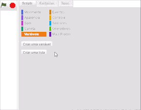
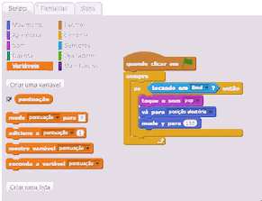
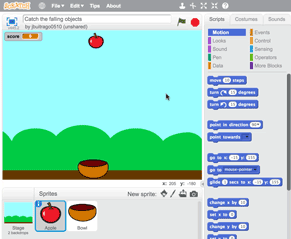

Melhore seu jogo
O que mais você quer adicionar ao seu jogo? Tente algumas dessas ideias.
Adicione uma pontuação
Crie uma variável para salvar a pontuação.

E então adicione os blocos de pontuação ao seu script:

Faça mais maçãs
Use a ferramenta de duplicação para copiar o ator que representa a maçã e seus scripts.
